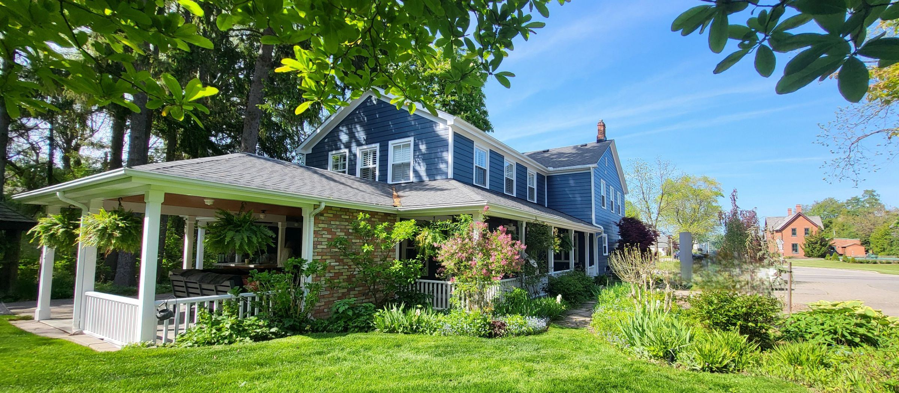
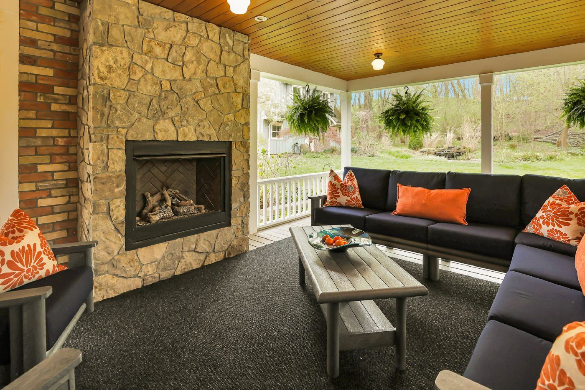
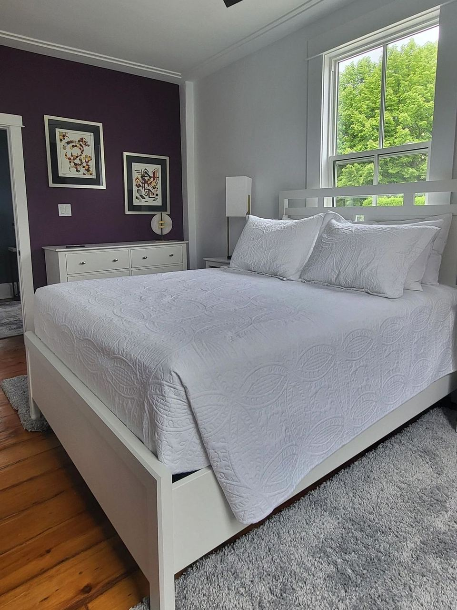
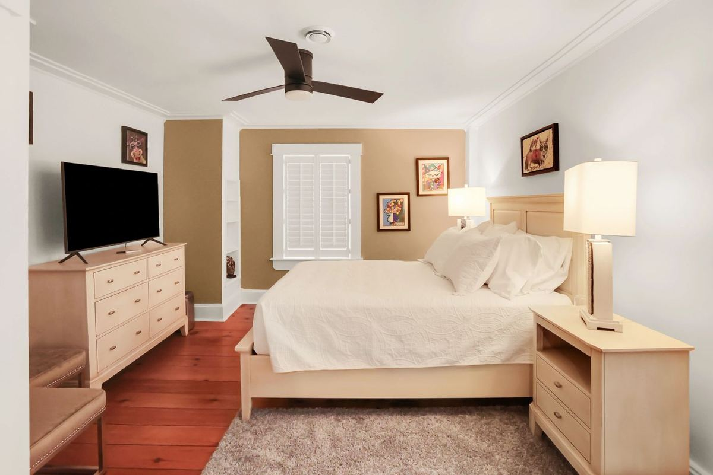

Suite
SuiteThe Clarence
- King bed
- Garden & Fort George views
A historic haven of opulent comfort with a 180° view of the garden and Fort George. Perfect for celebrating special moments.

Renovated 2024 · Licence #042-2024
Six colourful rooms, a gourmet three-course breakfast, a koi-pond garden and a 4 PM wine hour, a five-minute stroll from Old Town and the Shaw Festival.
Our story
Built in 1832, the Manor was once owned by James Crooks, a celebrated militia captain from the War of 1812, who turned it into a welcoming tavern and inn after the war.
Completely renovated in 2024, it now pairs old-world charm with modern comfort: plush furnishings, modern art, warm colours, and a serene garden with a koi pond beneath giant willows. We're across from the Niagara Pumphouse Art Gallery, nestled in a horseshoe of Niagara Parks land between Willow Park and Fort George.
Tour the manor →

Accommodations
Each room has a queen or king bed, a private bathroom, a large smart TV with Netflix, premium L'Occitane bath products, luxurious linens and free high-speed Wi-Fi.
SuiteA historic haven of opulent comfort with a 180° view of the garden and Fort George. Perfect for celebrating special moments.

Ground floorBathed in deep purple, a regal retreat that blends tradition and modernity, with a unique open-concept shower.
 220 sq ft
220 sq ftOur most spacious queen room, painted sage green and facing the Niagara River, Fort George and the Pumphouse Art Gallery.
 180 sq ft
180 sq ftA cozy blue sanctuary with a reading nook and a large bathroom under cathedral ceilings, made for quiet moments with a good book.
Painted in soft yellows and filled with morning light, overlooking two ancient willows and the Niagara River.

190 sq ftWrapped in calming taupe, with a bright, spacious bathroom under cathedral ceilings and a view of the forest bordering Fort George.
The Manor
Curl up by the fireplace with a glass of wine, sit by the koi pond between the willows, or put your feet up in a rocking chair on the porch.
Breakfast
Served in our modern dining room overlooking the garden and koi pond, with fresh, locally sourced ingredients and a fine selection of coffee and teas.
Explore
We're half a kilometre from the heart of Old Town. Just ask, and our innkeeper will book the wine pairing, the theatre seats or the dinner reservation for you.
All of the Shaw Festival theatres are an easy walk away. Ask us about dinner-and-a-show evenings.
Nearly 40 wineries, from Between the Lines to Château des Charmes, Pillitteri and our local favourite, AMO.
The War of 1812 fort sits right next door, bordered by forest and parkland.
Lake Ontario's shore is steps away. Try paddleboarding, kayaking, or a bike tour along the Niagara River.
Treadwell, The Epicurean, Corks, HOB NOB, The Olde Angel Inn, Noble, Tiara and more, all walkable.
A short drive to the Falls, the Butterfly Conservatory, casinos and world-class golf.
Good to know
Check-in is from 3:00 to 6:00 PM, and check-out is by 11:00 AM. Arriving later? Just call us.
Yes! A gourmet three-course breakfast with a fine selection of coffee and teas. We cater to food allergies and offer vegetarian and vegan options.
Yes, you get reserved parking for one vehicle for your whole stay, which is a real perk in Old Town. Bicycles can go in the garage.
There's a garden with plenty of seating, an indoor living room with a fireplace, and a 4:00 PM social hour with complimentary wine.
Children over 12 are welcome. There's a two-person limit per room. We have a strict no-pet policy, out of care for future guests with allergies.
We take a 50% deposit when you book. If you cancel more than 30 days before arrival, we refund it minus a $50 CAD administration fee. Within 30 days of arrival, the deposit is non-refundable. Cancellations within 7 days of arrival are charged the full room rate.
Yes, free high-speed Wi-Fi, plus a smart TV with Netflix in every room.
Book direct
Pick your dates and we'll take you straight to our secure booking page to see live availability and rates. Booking direct means no third-party fees and a direct line to your innkeeper.
Find us
Niagara-on-the-Lake, Ontario L0S 1J0
Across from the Niagara Pumphouse Art Gallery
+1 289-868-8688
Office hours 9:00 AM – 5:00 PM
Walking times are approximate.